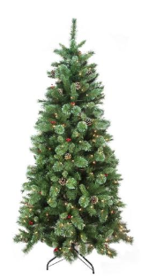

7.5' Pre-Lit Mixed Pine Multi-Function Remote Control Artificial Christmas Tree - Multi-Color Lights - 31464796. Hinged branch construction with pre-shaped memory wire
Light sets on tree are UL listed for indoor or outdoor use, however the tree itself is recommended for indoor use
Features one plug quick connect technology
If one bulb burns out, the rest will stay lit
Easy to connect UL adapter with foot pedal, control box and remote control
4-piece easy assembly (including stand)
Comes with replacement bulbs, spare bulbs, and a metal stand with foot pedal
Dimensions: 7.5' high (from the base of stand to the top of the tree)
53" base diameter (at the widest point)
Material(s): PE/PVC/metal/bulbs/wire